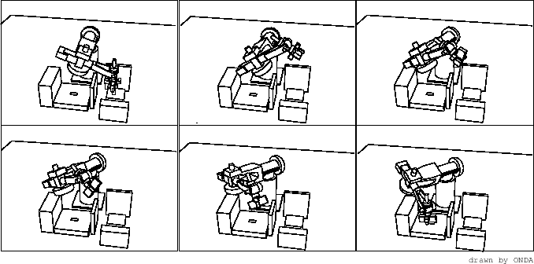

Subsections
EusLisp is an integrated programming system
for the research on intelligent robots
based on Common Lisp and Object-Oriented programming.
The principal subjects
in the field of robotics research are sensory data processing,
visual environment recognition, collision avoiding motion planning,
and task planning.
In either problem, three dimensional shape models of robots and
environment play crucial roles.
A motivation to the development of EusLisp was a demand for an extensible
solid modeler that can easily be made use of from higher level symbolic
processing system.
Investigations into traditional solid modelers proved that the vital
requirement for their implementation language was the list processing
capability to represent and manage topology among model components.
Numerical computation power was also important, but locality of geometric
computation suggested the provision of vector/matrix functions as
built-ins would greatly ease programming.
Thus the primary decision to build a solid modeler in a Lisp
equipped with a geometric computation package was obtained.
Although a solid modeler provides facilities to define shapes of 3D
objects, to simulate their behaviors, and to display them graphically,
its applications are limited until it is incorporated in robot modules
mentioned above. These modules also need to be tightly interconnected
to achieve fully integrated robot systems.
EusLisp sought for the framework of this integration
in object-oriented programming (OOP).
While OOP promotes modular programming, it facilitates incremental
extension of existing functions by using inheritance of classes.
In fact, components in the solid modeler, such as bodies, faces, and edges,
can orderly be inplemented by extending one of the most basic class
coordinates.
These components may have further subclasses to provide individual functions
for particular robot applications.
Based upon these considerations, EusLisp has been developped as an
object-oriented Lisp which implements an extensible solid modeler[].
Other features include intertask communication needed for the cooperative
task coordination, graphics facilities on X-window for
visual user interface, and foreign language interface to support
mixed language programming.
In the implementation of the language, two performance-effective techniques
were invented in type discrimination and memory management
[5,,].
The new type discrimination method guarantees
constant-time discrimination between
types in tree structured hiearchy without regard to the depth of trees.
Heap memory is managed in Fibonacci buddy method, which improves
memory efficiency without sacrificing runtime or garbage-collection
performance.
This reference manual describes EusLisp version 7.27 in two parts,
EusLisp Basics and EusLisp Extensions.
The first part describes Common Lisp features and object-oriented
programming. Since a number of literatures are available on both topics,
the first part is rather indifferent except EusLisp's specific
features as described in Interprocess Communication and Network,
Toplevel Interaction, Disk Save, etc.
Beginners of EusLisp are advised to get familiar with
Common Lisp and object oriented programming in other ways
[2,4].
The second part deals with features more related with robot applications,
such as
Geometric Modelling, Image Processing, Manipulator Model
and so on.
Unfortunately,
the descriptions in this part may become incomplete or inaccurate
because of EusLisp's rapid evolution.
The update information is available via euslisp mailing list
as mentioned in section 1.6.
Unlike other Lisp-based object-oriented programming languages like
CLOS [4],
EusLisp is a Lisp system built on the basis of object-orientation.
In the former approach, Lisp is used as an
implementation language for the object-oriented programming,
and there is apparent distinction between system defined objects
and user defined objects, since system data types do not have
corresponding classes.
On the other hand, every data structure in EusLisp except number is
represented by an object, and there is no inherent difference between
built-in data types, such as cons and symbols,
and user defined classes.
This implies that even the system built-in data types
can be extended (inherited) by user-defined classes.
Also, when a user defines his own class as a subclass of a built-in class,
he can use built-in methods and functions for the new class,
and the amount of description for a new program can be reduced.
For example, you may extend the cons class to have extra field other
than car and cdr to define queues, trees, stacks, etc.
Even for these instances, built-in functions for
built-in cons are also applicable without any loss of efficiency,
since those functions recognize type hierarchy in a constant time.
Thus, EusLisp makes all the system built-in facilities open to programmers
in the form of extensible data types.
This uniformity is also beneficial to the implementation of EusLisp,
because, after defining a few kernel functions
such as defclass, send, and instantiate,
in the implementation language,
most of house-keeping functions to access the internal structure of built-in
data types can be coded in EusLisp itself.
This has much improved the reliability and maintainability of EusLisp.
- object-oriented programming
- EusLisp provides single-inheritance Object-Oriented programming.
All data types except numbers are represented by objects whose
behaviors are defined in their classes.
- Common Lisp
- EusLisp follows the specifications of Common Lisp
described in [2] and [3]
as long as they are consistent with EusLisp's goal and object-orientation.
See next subsection for incompatibilities.
- compiler
- EusLisp's compiler can boost the execution 5 to 30
times as fast as the interpreted execution.
The compiler keeps the same semantics as the interpreter.
- memory management
- Fibonacci buddy method,
which is memory efficient, GC efficient, and robust,
is used for the memory management.
EusLisp can run on machines with relatively modest amount of memory.
Users are free from the optimization of page allocation for each
type of data.
- geometric primitives
- Since numbers are always represented as immediate data,
no garbage is generated by numeric computation.
A number of geometric functions for arbitrary-sized vectors and matrices
are provided as built-in functions.
- geometric modeler
- Solid models can be defined from primitive bodies using CSG set operations.
Mass properties, interference checking, contact detection, and so on,
are available.
- graphics
- Hidden-line eliminated drawing and hidden-surface eliminated rendering
are available.
Postscript output to idraw can be generated.
- image processing
- Edge based image processing facility is provided.
- manipulator model
- 6 D.O.F.s robot manipulator can easily be modeled.
- Xwindow interface
- Three levels of Xwindow interface, the Xlib foreign functions,
the Xlib classes and the original XToolKit classes are provided.
- foreign-language interface
- Functions written in C or other languages can be linked into EusLisp.
Bidirectional call between EusLisp and other language are supported.
Functions in libraries like LINPACK become available through this interface.
Call-back functions in X toolkits can be defined in Lisp.
- unix binding
- Most of unix system calls and unix library functions are assorted as Lisp
functions. Signal handling and asynchronous I/O are also possible.
- multithread
- multithread programming, which enables multiple
contexts sharing global data, is available on Solaris 2 operating system.
Multithread facilitates asynchronous programming and improves real-time
response[6,].
If EusLisp runs on multi-processor machines, it can utilize
parallel processors' higher computating power.
Common Lisp has become the well-documented and widely-available standard Lisp
[2,3].
Although EusLisp has introduced lots of Common Lisp features
such as variable scoping rules, packages, sequences, generalized variables,
blocks, structures, keyword parameters, etc.,
incompatibilities still remain.
Here is a list of missing features:
- multiple values:
multiple-value-call,multiple-value-prog1, etc.
- some of data types:
complex number, bignum, ratio, character and deftype
- some of special forms:
progv, compiler-let,macrolet
Following features are incomplete:
- closure - only valid for dynamic extent
- declare,proclaim - inline and ignore are unrecognized
- 1986
- The first version of EusLisp ran on Unix-System5/Ustation-E20.
Fibonacci buddy memory management, simple compiler generating M68020
assembly code, and vector/matrix functions were tested.
- 1987
- The new fast type checking method is implemented.
The foreign language interface and the SunView interface were incorporated.
- 1988
- The compiler was changed to generate C programs as
intermediate code. Since the compiler became processor independent,
EusLisp was ported on Ultrix/VAX8800 and on SunOS3.5/Sun3 and /Sun4 .
IPC facility using socket streams was added.
The solid modeler was implemented.
Lots of Common Lisp features such as keyword parameters,
labeled print format to handle recursive data objects,
generic sequence functions,
readtables, tagbody, go, flet, and labels special forms, etc.,
were added.
- 1989
- The Xlib interface was introduced.
% read macro to read C-like mathematical expressions was made.
manipulator class is defined.
- 1990
- The XView interface was written by M.Inaba.
Ray tracer was written.
Solid modeler was modified to keep CSG operation history.
Asynchronous I/O was added.
- 1991
- The motion constraint program was written by H.Hirukawa.
Ported to DEC station.
Coordinates class changed to handle both 2D and 3D coordinate systems.
Body composition functions were enhanced to handle contacting objects.
CSG operation for contacting objects.
The package system became compatible with Common Lisp.
- 1992
- Face+ and face* for union and intersection of two coplanar faces
were added.
Image processing facility was added. The first completed reference manual
was printed and delivered.
- 1993
- EusLisp was stable.
- 1994
- Ported to Solaris 2. Multi-context implementation using
Solaris's multithread facility. XToolKit is built. Multi robot simulator,
MARS was written by Dr. Kuniyoshi. EusLisp organized session at RSJ 94,
in Fukuoka.
- 1995
- The second version of the reference manual is published.
- 2010
- Version 9.00 is releaced, The licence is changed to BSD.
- 2011
- Add Darwin OS Support, Add model files.
- 2013
- Add Cygwin 64 Bit support, expand MXSTACK from 65536 to 8388608, KEYWORDPARAMETERLIMIT from 32 to 128.
- 2014
- Use UTF-8 for documents, Version 9.10 is releaced.
- 2015
- more error check on min/max, support arbitrary length for vplus, more quiet for non-ttyp mode, Version 9.11 is releaced.
- 2015
- Version 9.12 is released, support ARM
Version 9.13 is released, support class documentation
Version 9.14 is released, fix assert API. Now message is optional (defmacro assert (pred &optional message)
Version 9.15 is released, fix char comparison function (previous version retuns opossite result), support multiple argument at function /=, add url encode feature (escape-url function), support microsecond add/subtract in interval-time class
Version 9.16 is released, added make-random-state, fixed bug in lib/llib/unittest.l
- 2016
- Version 9.17 is released, add trace option in (init-unit-test), enable to read #f(nan inf)．fix models/doc.
Version 9.18 is released, support gcc-5.
Version 9.20 is released, support OSX (gluTessCallback, glGenTexturesEXT), add GL_COLOR_ATTACHMENT constants, fix color-image class, (it uses RGB not BGR).
Version 9.21 is released, fix :trim of hashtab class, enable to compile filename containing -, do not raise error when not found cygpq.dll (Cygwin)
Version 9.22 is released, add :color option to :draw-box, :draw-polyline, :draw-star, with-output-to-string returns color instead of nil, print call stack on error, check if classof is called with pointer, pass symbol pointer to funcall in apply, add error check of butlast and append.
Version 9.23 is released, support ARM64, udpate models.
The installation procedure is described in README.
The installation directory, which is assumed to be "/usr/local/eus/",
should be set to the global variable
*eusdir*, since this location is referenced
by load and the compiler.
Subdirectories in *eusdir* are described in table 1.
Among these,
c/, l/, comp/, geo/, clib/, and xwindow contain essential
files to make eus and eusx. Others are optional libraries, demonstration
programs and contributions from users.
Table 1:
Directories in *eusdir*
|
|
License
EusLisp is distributed under the following BSD License.
Copyright (c) 1984-2001, National Institute of Advanced Industrial Science
and Technology (AIST)
All rights reserved.
Redistribution and use in source and binary forms, with or without modification,
are permitted provided that the following conditions are met:
* Redistributions of source code must retain the above copyright notice,
this list of conditions and the following disclaimer.
* Redistributions in binary form must reproduce the above copyright notice,
this list of conditions and the following disclaimer in the documentation
and/or other materials provided with the distribution.
* Neither the name of the National Institute of Advanced Industrial Science
and Technology (AIST) nor the names of its contributors may be used to
endorse or promote products derived from this software without specific prior
written permission.
THIS SOFTWARE IS PROVIDED BY THE COPYRIGHT HOLDERS AND CONTRIBUTORS "AS IS"
AND ANY EXPRESS OR IMPLIED WARRANTIES, INCLUDING, BUT NOT LIMITED TO,
THE IMPLIED WARRANTIES OF MERCHANTABILITY AND FITNESS FOR A PARTICULAR PURPOSE
ARE DISCLAIMED. IN NO EVENT SHALL THE COPYRIGHT HOLDER OR CONTRIBUTORS BE
LIABLE FOR ANY DIRECT, INDIRECT, INCIDENTAL, SPECIAL, EXEMPLARY, OR
CONSEQUENTIAL DAMAGES (INCLUDING, BUT NOT LIMITED TO, PROCUREMENT OF SUBSTITUTE
GOODS OR SERVICES; LOSS OF USE, DATA, OR PROFITS; OR BUSINESS INTERRUPTION)
HOWEVER CAUSED AND ON ANY THEORY OF LIABILITY, WHETHER IN CONTRACT, STRICT
LIABILITY, OR TORT (INCLUDING NEGLIGENCE OR OTHERWISE) ARISING IN ANY WAY OUT
OF THE USE OF THIS SOFTWARE, EVEN IF ADVISED OF THE POSSIBILITY OF SUCH DAMAGE.
Until version 8.25, Euslisp is distributed under following licence.
EusLisp can be obtained with its source code via ftp from
etlport.etl.go.jp (192.31.197.99).
Those who use EusLisp must observe following articles
and submit a copy of license agreement (doc/LICENCE) to the author.
Toshihiro MATSUI
Intelligent Systems Division,
Electrotechnical Laboratory
1-1-4 Umezono,Tsukuba, Ibaraki 3058568, JAPAN. email: matsui@etl.go.jp
Users are registered in the euslisp mailing list (euslisp@etl.go.jp),
where information for Q&A, bug fix, and upgrade information is circulated.
This information has been accumulated in *eusdir*/doc/mails.
- The copyright of EusLisp belongs to
the author (Toshihiro Matsui) and Electrotechnical Laboratory.
The user must get agreement of use from the author.
- Licensee may use EusLisp for any purpose other than military purpose.
- EusLisp can be obtained freely from Elecrotechnical Laboratory
via ftp.
- EusLisp may be copied or sold as long as articles described here
are observed. When it is sold, the seller must inform the customers
that the original EusLisp is free.
- When licensees publicize their researches or studies which used EusLisp,
the use of EusLisp must be cited with appropriate bibliography.
- Licensees may add changes to the source code of EusLisp.
The resulted program is still EusLisp as long as the
change does not exceed 50% of codes,
and these articles must be observed for unchanged part.
- The copyright of programs developped in EusLisp belongs to the
developper. However, he cannot extend his copyright over the main body
of EusLisp.
- Neither the author nor ETL provides warranty.
Demonstration programs are found in demo subdirectory.
cd to *eusdir* and run eusx.
- Robot Animation
-
Load demo/animdemo.l from eusx.
Smooth animation of eta3 manipulator will be shown after a
precomputation of approximately 20 minutes.
- Ray-Tracing
-
If you have 8-bit pseudo color display,
a ray-tracing image can be generated by loading
demo/renderdemo.l.
Make sure geo/render.l has already been compiled.
- Edge Vision
- Loading demo/edgedemo.l, a sample gray-scale image is displayed.
You give parameters for choosing the gradient operator and
edge thresholds.
Edges are found in a few second and overlayed on the original image.
Figure 1:
Animation of Collision Avoidance Path Planning
|  |
Travis CI User
2017-03-07